物理图像
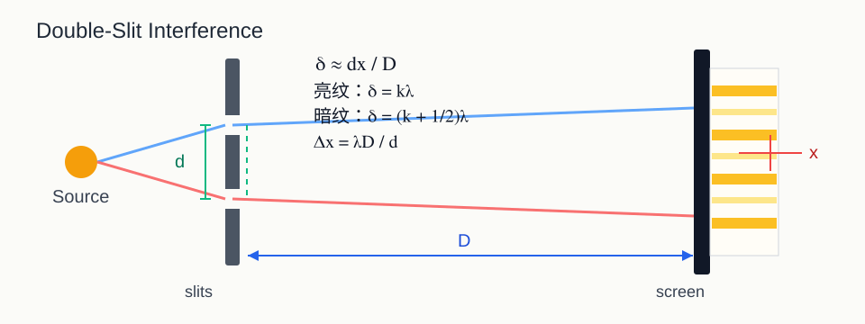
- 干涉题先别急着套公式，先找出哪两束光在叠加。
- 一旦写出光程差 \(\delta\)，大多数题已经完成了一半。
- 亮纹 / 暗纹的判断只看相位差，也就是光程差。
这不是“十分钟刷完”的提纲，而是一份按一周复习节奏展开的长篇网页讲义。 你可以把它当成主线教材来用：先看章节讲解，再做例题和自测，最后用模拟卷收尾。 配图、公式、题型、错因、答案思路都已经并进一页里，直接用浏览器长期学习就行。
先把范围和优先级定死，后面所有复习动作都围绕这张地图展开。
主线集中在 光学 + 量子物理，其中最值得投入时间的是第 22–24、26–28 章。
闭卷拉分关键不是复杂推导，而是你能不能在 10 秒内认出题型，再迅速调用对应公式。
先读本页，再回到历年卷专项刷题；考前只回看模板区和速记区，不建议再来回乱翻课件。
大学物理2期末-2020秋.pdf、大学物理2期末-2021秋.pdf、大学物理2期末线上-2022春.pdf
把时间花在最会出分的地方，而不是平均用力。
双缝、薄膜、空间相干性、迈克耳孙干涉仪，本质都围绕“光程差”。

| 两束反射光半波损失差 | 反射亮纹条件 | 反射暗纹条件 |
|---|---|---|
| 相差 0 次或 2 次 | \(2nt = k \lambda\) | \(2nt = (k + 1/2) \lambda\) |
| 相差 1 次 | \(2nt = (k + 1/2) \lambda\) | \(2nt = k \lambda\) |
单缝看包络，光栅看“单缝包络 + 多缝干涉主极大”。
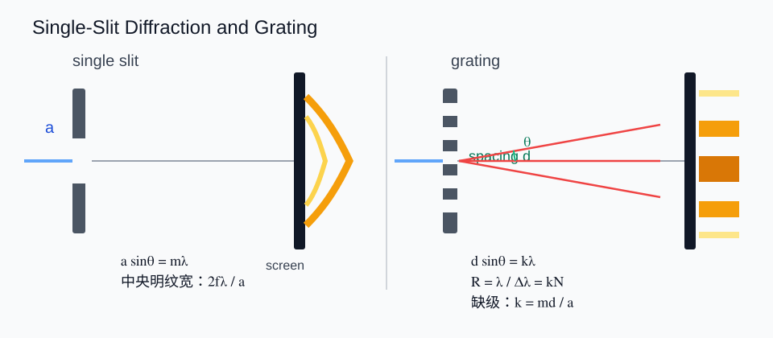
偏振片筛方向，波片改相位差，这是整章最重要的两句话。
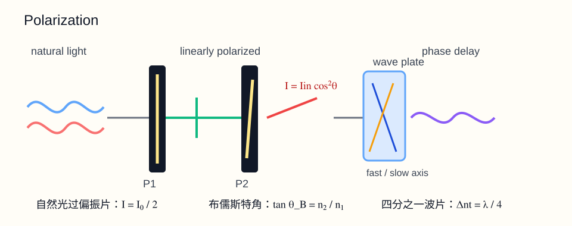
别跳步骤。闭卷里最容易丢分的不是不会，而是第一步没先把自然光除以 2。
本章大多数题都能收束到几类：黑体、光电效应、康普顿、德布罗意、不确定关系、X 射线衍射。
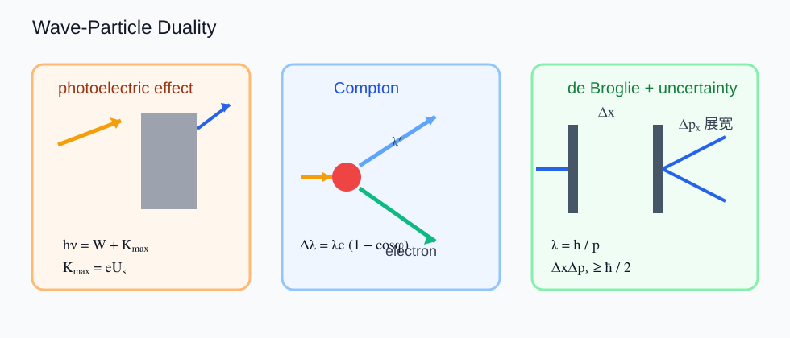
意思：一个光子的能量由波长决定。\(h\) 是普朗克常量，\(c\) 是光速，\(\lambda\) 是入射光波长。
怎么用：题目给波长时，先用这个把“光的波长”换成“每个光子的能量”。波长越短，光子能量越大。
意思：光子能量分成两份：一份用来把电子从金属里“抠出来”，叫逸出功 \(W\)；剩下的变成光电子最大动能。
为什么是 \(eU_s\)：截止电压刚好能把最快的光电子拦住，所以最大动能 \(K_{\max} = eU_s\)。
易错点：\(eU_s\) 不是逸出功，它是最大动能。
意思：总光子能量减去最大动能，剩下就是金属的逸出功。
怎么用：题目给入射光波长 \(\lambda\) 和截止电压 \(U_s\)，通常就是让你求 \(W\)。
意思：刚好能发生光电效应的最低频率。这个时候电子刚好被打出来，最大动能为 0。
怎么判断：如果入射光频率 \(\nu < \nu_0\)，不管光强多大，都不会发生光电效应。
意思：刚好能发生光电效应的最大波长，也叫截止波长。
怎么判断：如果入射光波长 \(\lambda > \lambda_0\)，光子能量不够，电子出不来。
重点不是求解微分方程本身，而是“本征态、叠加态、测量概率、时间演化”。
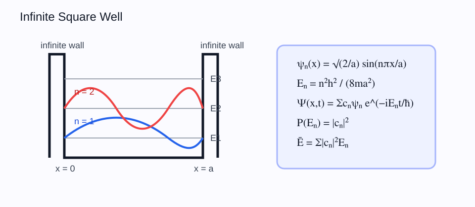
很多看起来复杂的初态，最终只是 \(\psi_1\) 和 \(\psi_2\) 的线性组合，别被表面形式吓住。
氢原子、量子数、角动量量子化、谱线条数，是这一章几乎固定出现的几类题。
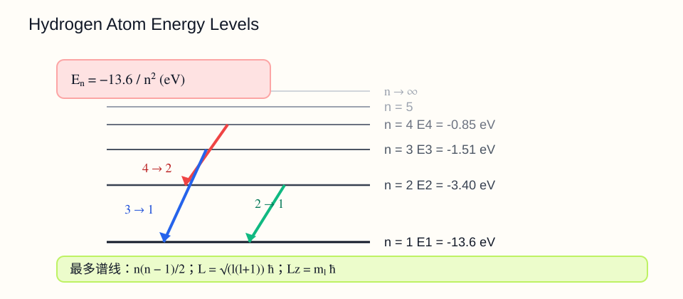
这一章放在低优先级补充区，只有在老师明确强调时再重点投入。
考场上最重要的是“先下得去笔”。下面这些模板就是你每类题的起手式。
临进考场前最后五分钟，只需要把这些提醒重新过一遍。
这页已经做了打印样式，直接点左侧“打印 / 导出 PDF”就可以出一份干净版本。
如果你这一周就靠这份网页讲义学，那最重要的不是“从头看到尾”，而是每天把输入、输出和复盘都安排上。
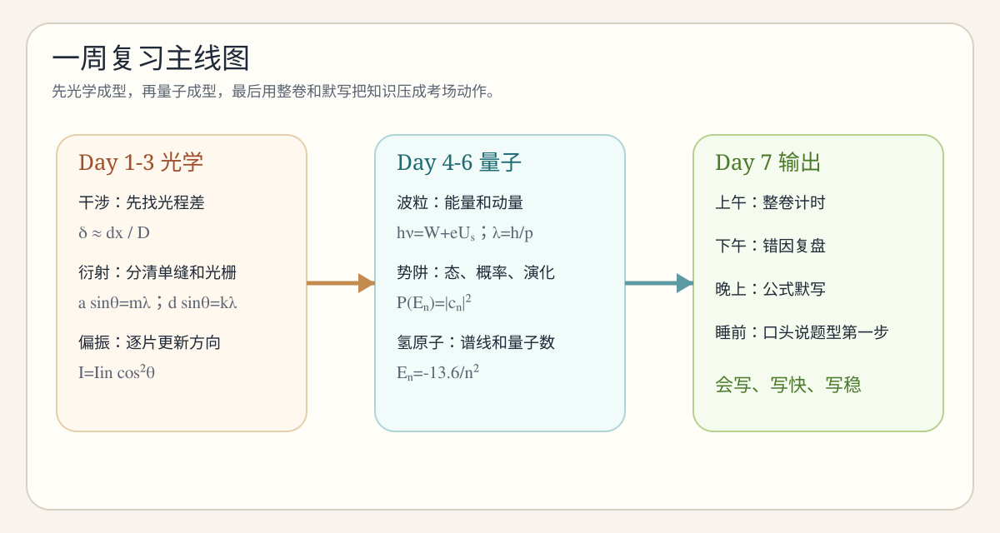
这张图把一周学习压成三段：先把光学的题型识别练稳，再把量子的概念和公式串起来，最后用整卷和默写封口。
| 阶段 | 建议时间 | 做什么 | 核心目标 |
|---|---|---|---|
| 输入 | 60–90 分钟 | 看本讲义的知识主线、公式说明、例题拆解 | 先建结构，不急着做很多题 |
| 输出 | 40–60 分钟 | 自己做“自测题”和题库小题 | 逼自己从“看懂”变成“会写” |
| 复盘 | 20–30 分钟 | 整理错因、抄公式、口头复述题型 | 把当天知识压成可重复调用的模板 |
这章不是单纯背公式，而是先判断“哪两束光在叠加”，再把相位差统一成光程差去做。
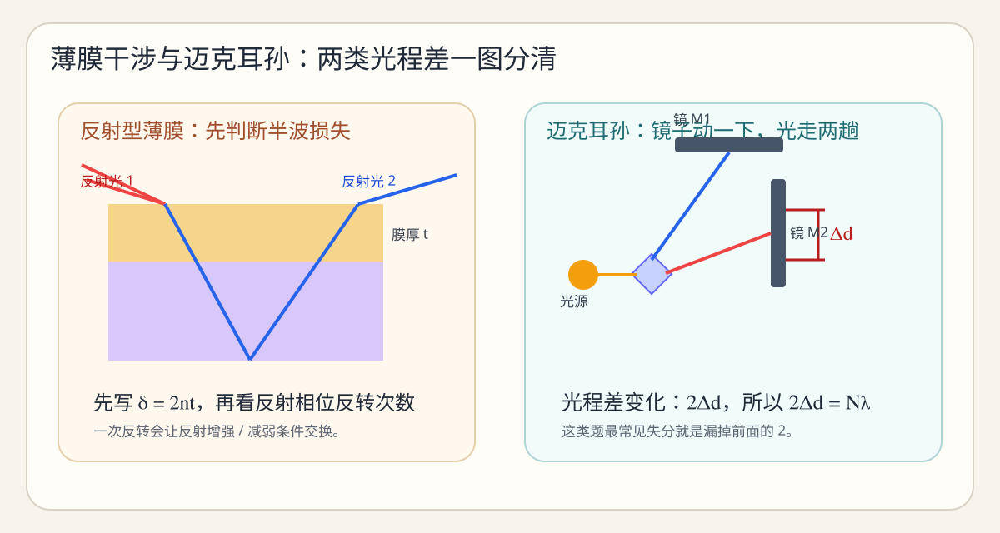
薄膜题先判断反射相位反转；迈克耳孙题先抓住镜面移动造成的往返光程差变化。
| 看到什么题面 | 第一反应 | 最常用关系 | 最容易错的地方 |
|---|---|---|---|
| 双缝、屏上某点、亮暗纹位置 | 先找双缝几何近似 | \(\delta \approx dx/D\) | 把 \(x\)、\(d\)、\(D\) 的角色写反 |
| 插片、介质、条纹整体平移 | 算附加光程 | \((n-1)t\) | 只改某一条纹位置，忘了整套图样平移 |
| 薄膜、反射增强 / 减弱 | 先数相位反转次数 | \(2nt\) 与亮暗条件联立 | 没先判断高低折射率界面 |
| 牛顿环、环纹级次、环半径 | 想到厚度随半径变 | \(2\Delta d = N\lambda\) | 直径和半径关系漏平方 |
| 迈克耳孙、镜面移动、条纹变化数 | 先写光程差变化 | \(2\Delta d = N\lambda\) | 最常漏掉前面的 \(2\) |
很多同学一见题就想套“亮纹条件”“暗纹条件”，但真正决定题目走向的是：参与叠加的是哪两束光，它们从哪出发、经过了哪些介质、发生了几次反射、每次反射有没有相位反转。
所以你做干涉题的标准流程最好固定成这样：
双缝干涉最常见的问法有四种：求某级亮纹 / 暗纹位置，求条纹间距，求插片引起的平移量，求相干长度或相干条件。
几何近似成立时，屏上距离中央明纹横坐标为 \(x\) 的点，对应光程差可写成 \(\delta \approx dx/D\)。这个式子其实就是把角度很小时的 \(\sin \theta \approx \tan \theta \approx x/D\) 用进去了。
一旦有了 \(\delta \approx dx/D\)，后面的题基本都只是把它和亮暗条件联立。比如第 \(k\) 级亮纹位置是 \(x_k = k\lambda D / d\)，相邻亮纹间距就是 \(\Delta x = \lambda D / d\)。
如果在某一路插入折射率为 \(n\)、厚度为 \(t\) 的薄片，附加光程是 \((n-1)t\)。注意这不是某一条纹自己变了，而是整套条纹整体平移。平移量和屏上坐标的关系是：
这三类题混在一起，本质上是因为它们都在问“光程差如何随着某个几何量变化”。薄膜题里变化的是膜厚 \(t\)，牛顿环里变化的是接触点到圆心的半径 \(r\)，迈克耳孙里变化的是镜面移动量 \(\Delta d\)。
薄膜题第一步不是写公式，而是数相位反转次数。若两束反射光在反射过程中额外损失半波，则亮暗条件会交换。这个判断不做，后面计算全对也会判反。
牛顿环经常考“第几环半径”“环直径变化”“明暗环数”。你如果把它当成普通薄膜题，再加上透镜几何关系就不难。迈克耳孙更像一个“会动的光程差发生器”，条纹变化数永远和光程差变化总量直接相关。
题型： 双缝间距 \(d\)，屏到双缝距离 \(D\)，一缝前插入薄片，折射率 \(n\)，厚度 \(t\)，求中央明纹平移量。
思路： 中央明纹之所以平移，是因为原来光程差为零的点不再在几何中心。插片引入附加光程 \((n-1)t\)，于是屏上某个新点需要靠几何路程差来抵消它。
点评： 这题最容易错成“某一级亮纹移动量”，实际上中央明纹本身也一起平移，整套图样都是同一个位移。
题型： 干涉仪中某反射镜移动了 \(\Delta d\)，求观察到多少条条纹掠过视场。
关键： 镜子移动了 \(\Delta d\)，往返程都变，所以光程差变化量不是 \(\Delta d\)，而是 \(2\Delta d\)。
点评： 这类题几乎是考试里最稳定的送分题，但也是最容易因为漏掉前面的 \(2\) 直接丢分的题。
这章真正难的不是计算，而是你能不能分清“单缝暗纹条件”和“光栅主极大条件”到底在描述什么。
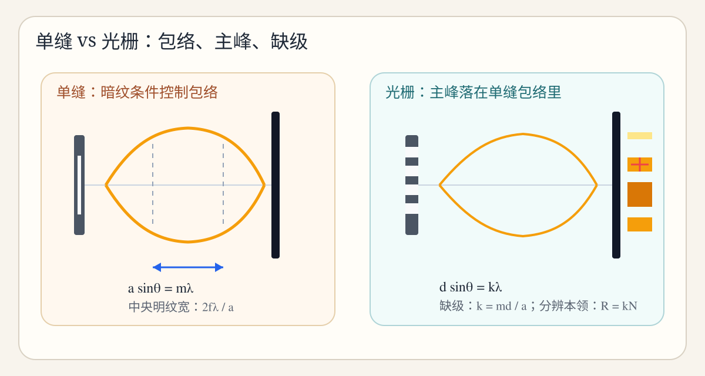
单缝暗纹控制包络，光栅主极大给出细峰位置；缺级就是两套条件撞在一起。
单缝衍射研究的是有限宽度缝对光的扩展作用，所以最稳定的条件是暗纹条件 \(a\sin\theta = m\lambda\)。光栅则是很多缝的干涉叠加，所以最重要的是主极大条件 \(d\sin\theta = k\lambda\)。
一旦这两个系统叠在一起，就出现“单缝包络 + 光栅细峰”的结构。所谓缺级，本质上是某个光栅主极大刚好满足单缝暗纹条件，于是这个主峰被消掉了。
单缝中央明纹两侧由第一暗纹夹住，所以其角宽度对应的是 \(m=\pm 1\) 两个暗纹之间的范围。若使用透镜焦平面，屏上中央明纹宽度常写成 \(2f\lambda/a\)。
这题最容易错的是：把“中央明纹宽度”误写成 \(f\lambda/a\)。其实从中心到一侧第一暗纹只是半宽，整宽要乘 \(2\)。
一旦题面同时给出缝宽 \(a\) 和光栅常数 \(d\)，就几乎可以直接判断这是一道“主极大 + 单缝包络 + 缺级”的综合题。做法是：
真正有区分度的地方不在计算，而在于你知不知道这三步必须连着写。
如果题目从“条纹位置”突然切换到“两条谱线刚好能分辨”，那说明题目已经从几何位置转向分辨能力。光栅分辨本领是 \(R = kN\)，而光学仪器（如望远镜、显微镜）常用瑞利判据 \(\theta_{\min} \approx 1.22\lambda/D\)。
你可以把它们分工记忆：光栅看波长分离，透镜口径看角分辨。考试经常用它们分别出题，但都在考“刚好分辨”的临界思维。
题型： 某光栅第 \(k\) 级主极大缺级，已知光栅常数 \(d\)，求缝宽 \(a\)。
思路： 缺级说明光栅主极大和单缝暗纹重合，因此：
点评： 这道题最容易直接把 \(k\) 当成 \(m\)。其实题里说的是“第几级主极大缺级”，对应的是光栅级次；单缝暗纹级次通常要单独设成 \(m\)。
题型： 光栅工作在第 \(k\) 级，有总缝数 \(N\)，求在波长 \(\lambda\) 附近最小可分辨波长差。
点评： 这题的关键不是会不会移项，而是看见“刚好分辨开”就要秒联想到分辨本领，而不是再去写主极大位置。
偏振题的难点不在算式，而在顺序。自然光、线偏振、两片偏振片、波片、布儒斯特角这些问法看起来散，其实都能用固定模板做。
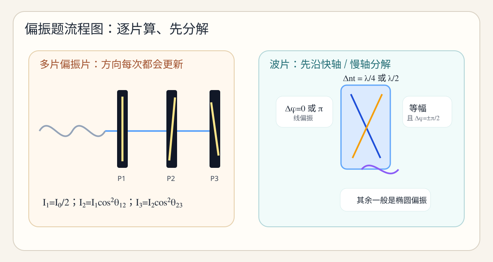
左边提醒多片偏振片必须逐片更新方向，右边提醒波片题先分解到快慢轴再判断相位差。
偏振的核心不是背定义，而是理解光振动方向被限制后的振幅分解。只要你接受“电矢量可以投影到某个允许方向上”，马吕斯定律就几乎是顺理成章的结果。
两片或三片偏振片题最容易做乱，是因为很多人把所有夹角一次性代进一个总公式。其实考试里最稳的是一步一步乘：
为什么要这样做？因为每过一片偏振片，出射光的偏振方向已经变成这片偏振片的透振方向。下一片看到的入射偏振方向，不再是最初的方向，而是上一片确定的新方向。
波片题常见的结构是：先给一个线偏振光入射到某个晶片，再问出射后是什么偏振。真正的第一步不是套结论，而是把振动分解到快轴和慢轴方向。
如果两分量振幅相等，且相位差变成 \(\pm \pi/2\)，那么出射就是圆偏振；如果相位差是 \(0\) 或 \(\pi\)，还是线偏振；其余一般是椭圆偏振。
所以做这类题你至少要回答三个问题：是否分解成两个分量、两个分量是否等幅、相位差最后变成多少。
题型： 自然光依次通过三片偏振片，相邻透振方向夹角已知，求最终光强。
点评： 这类题最常见的低级错误就是第一步没把自然光减半，或者把第二片和第三片的夹角错写成相对第一片的夹角。
题型： 光从介质 1 入射到介质 2，问入射角为多少时反射光完全偏振。
点评： 这题不是干涉，不是折射角，也不是全反射条件。看到“反射光完全偏振”就应该直接跳到布儒斯特角。
这章表面上很散，实际上一直在围绕同一件事打转：经典理论解释不了的地方，需要量子观点来接管。
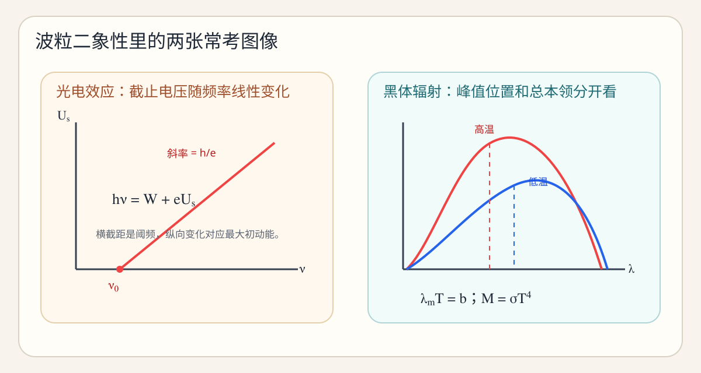
光电效应图像帮你读出阈频和截止电压；黑体曲线帮你区分峰值波长和总辐射本领。
如果你把这章看成四个完全独立的章节，就会背得很碎。其实它们是在共同说明：光和微观粒子既表现为波，也表现为粒子，单纯经典图像已经不够了。
| 内容 | 解决什么问题 | 最核心公式 | 考试最爱问什么 |
|---|---|---|---|
| 黑体辐射 | 经典理论紫外灾难 | \(\lambda_m T = b\) | 温度比、峰值波长比、总辐射本领比 |
| 光电效应 | 频率阈值和瞬时逸出 | \(h\nu = W + eU_s\) | 截止电压、逸出功、红限频率 |
| 康普顿散射 | 光子的动量效应 | \(\Delta\lambda = \lambda_C(1-\cos\phi)\) | 波长改变量、比值、散射角比较 |
| 德布罗意 / 不确定关系 | 粒子的波动性 | \(\lambda = h/p\)、\(\Delta x\Delta p_x \ge \hbar/2\) | 加速电压、缝宽估算、不确定关系量级 |
黑体辐射很少要求你推公式，更多是用维恩位移定律和斯特藩-玻尔兹曼定律做“比值型判断”。比如峰值波长变成原来的一半，温度就变成原来两倍；总辐射本领则按温度四次方变化。
只要你先看清楚题目问的是“峰值位置”还是“总辐射本领”，就不会把这两个定律混用。
光电效应是这章最应该拿满的内容。你只要分清三个量：光子能量 \(h\nu\)，逸出功 \(W\)，最大动能 \(eU_s\)，题目基本就已经做完了。
这题最爱出的陷阱是：把 \(eU_s\) 错当成逸出功。其实它表示的是逸出电子在截止条件下对应的最大初动能。
康普顿散射常见的高频问法不是让你推导，而是比较不同散射角对应的波长改变量。因为 \(\lambda_C\) 是常数，所以题目一旦问“比值”，你通常只需要比较 \(1-\cos\phi\)。
德布罗意波长则常见于电子经电压加速后的情况。如果电子经过电压 \(U\) 加速，其动能近似为 \(eU\)，动量可由 \(p=\sqrt{2meU}\) 给出，于是：
这类题最常错的地方不是公式，而是单位和根号忘写全。
题型： 入射光波长为 \(\lambda\)，金属的截止电压为 \(U_s\)，求逸出功和红限波长。
点评： 这类题思路非常标准，最怕的是你算出 \(W\) 后没意识到红限频率 / 红限波长还可以继续往下算。
题型： 同一种入射光，在散射角 \(\phi_1\)、\(\phi_2\) 下的波长改变量之比是多少。
点评： 这题的关键就是看出 \(\lambda_C\) 会约掉，别在常数上花时间。
这一章最容易出现“字都认识，题不会做”的情况，因为它考的不是代数技巧，而是量子态的组织方式。
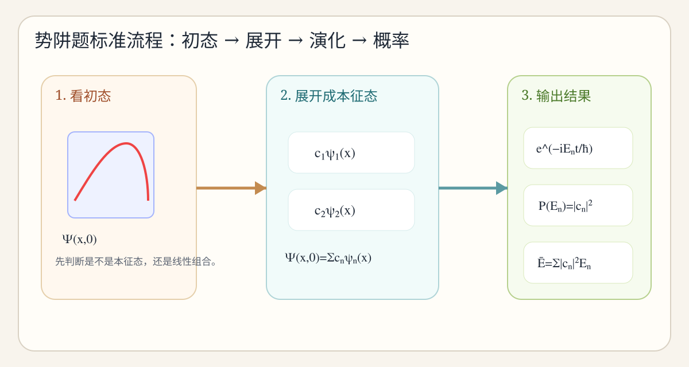
势阱题的顺序非常固定：先看初态，展开成本征态，再分别写时间演化、测量概率和平均能量。
无限深方势阱最先给你的是一个边界清晰的量子系统：粒子被限制在 \(0 < x < a\) 内。允许的定态波函数和能量不再连续，而是离散的本征态和本征值。
一旦初态不是某一个纯粹本征态，而是多个本征态的线性组合，那么后面的所有题都会围绕这件事展开：怎么展开、每项随时间怎么演化、测得不同能量的概率是多少、平均能量是多少。
如果系统正好处在某个本征态 \(\psi_n\)，那测量能量一定得到 \(E_n\)，题目其实很平。真正有区分度的是线性组合态：
这时候你要把“系数”理解成对不同本征态的权重。测量能量时，不是看 \(c_n\) 本身，而是看 \(|c_n|^2\)。
区间概率是在某个位置区间内找到粒子的可能性，所以必须对概率密度 \(|\Psi|^2\) 积分，而不是对 \(\Psi\) 积分。平均能量则是对不同能量结果按概率加权平均，因此：
只要你把“位置概率”与“能量测量概率”分成两套对象，很多表面复杂的题都会清晰下来。
题型： 已知 \(\Psi(x,0) = \dfrac{2}{\sqrt5}\psi_1(x)-\dfrac{1}{\sqrt5}\psi_2(x)\)，求能量测量结果及其概率。
点评： 负号不会影响概率，因为概率取的是模方。这也是很多同学第一次接触时会本能出错的地方。
题型： 已知初态展开式，求任意时刻波函数及平均能量。
点评： 平均能量不是把时间因子带进去重新计算，而是直接按各能量本征值的测量概率加权。
这章的表面知识点多，但真正高频的就三类：能级跃迁、谱线条数、量子数约束。
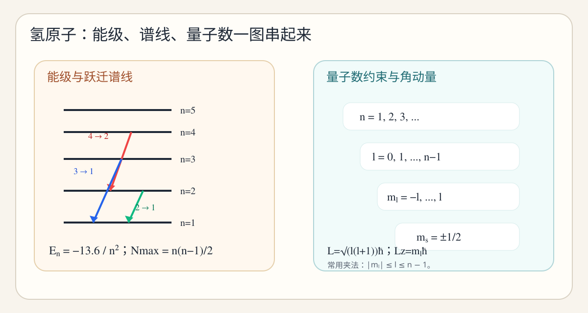
左边看能级跃迁和谱线，右边看量子数逐层约束，以及角动量大小和分量的区别。
如果题目说“一群氢原子都在某个激发态 \(n\)”，那这类题几乎固定考最多能发出几条不同谱线。答案直接是 \(n(n-1)/2\)。
如果题目问可见光中最短波长，通常优先盯巴耳末系，也就是跃迁终态是 \(n=2\)。因为可见光最常对应这一系列，短波长通常来自更高初态向 \(n=2\) 的跃迁。
量子数题看起来很抽象，其实很多时候只是用约束范围把未知量夹出来。比如已知 \(n=4\)、\(m_l=-3\)，那么因为 \(|m_l| \le l \le n-1\)，立刻得到 \(3 \le l \le 3\)，所以 \(l=3\)。
这类题真正容易错的是把约束关系记反，或者把角动量大小 \(L\) 和其 \(z\) 分量 \(L_z\) 混掉。
题型： 一群氢原子都被激发到 \(n=4\)，求最终可能发出几条不同谱线。
点评： 这道题不是只数“从 4 直接往下跳”几种，而是考虑所有可能的级联跃迁形成的不同谱线。
题型： 已知某电子状态 \(n=4\)、\(m_l=-3\)，求 \(l\) 与轨道角动量大小。
点评： 很多人会把 \(L_z = m_l\hbar\) 错写成角动量大小，这正是考试想卡的点。
这一部分适合你拿纸遮住右侧，先自己默写，再对照网页核对。真正能在闭卷里稳定拿分的人，通常都能把这些骨架直接写出来。
| 提示词 | 你应该默写出的东西 | 默写时必须带上的说明 |
|---|---|---|
| 双缝几何近似 | \(\delta \approx dx/D\) | 说明小角近似成立 |
| 亮纹 / 暗纹条件 | \(\delta=k\lambda\)、\(\delta=(k+1/2)\lambda\) | 明确对应的是光程差 |
| 条纹间距 | \(\Delta x=\lambda D/d\) | 说明是相邻同类条纹 |
| 插片平移 | \(\Delta x = D(n-1)t/d\) | 说明是整体平移 |
| 迈克耳孙 | \(2\Delta d=N\lambda\) | 别漏掉前面的 2 |
| 单缝暗纹 | \(a\sin\theta=m\lambda\) | \(m=1,2,\dots\) |
| 中央明纹宽度 | \(2f\lambda/a\) | 强调这是整宽 |
| 光栅主极大 | \(d\sin\theta=k\lambda\) | 级次可正可负 |
| 缺级 | \(k=md/a\) | 由光栅主极大与单缝暗纹联立得出 |
| 分辨本领 | \(R=\lambda/\Delta\lambda=kN\) | 看到“刚好分辨”就想它 |
| 提示词 | 你应该默写出的东西 | 最容易漏的点 |
|---|---|---|
| 自然光过偏振片 | \(I=I_0/2\) | 别把它写成马吕斯定律 |
| 马吕斯定律 | \(I=I_{\text{in}}\cos^2\theta\) | 角度是振动方向与透振方向夹角 |
| 布儒斯特角 | \(\tan i_B=n_2/n_1\) | 不是全反射条件 |
| 四分之一波片 | \(\Delta nt=\lambda/4\) | 通常用来制造 \(\pi/2\) 相位差 |
| 维恩位移定律 | \(\lambda_mT=b\) | 考峰值位置，不是总辐射本领 |
| 斯特藩-玻尔兹曼 | \(M=\sigma T^4\) | 考总本领比最常见 |
| 光电效应 | \(h\nu=W+eU_s\) | \(eU_s\) 不是逸出功 |
| 康普顿 | \(\Delta\lambda=\lambda_C(1-\cos\phi)\) | 比值题里常数会约掉 |
| 德布罗意 | \(\lambda=h/p\) | 加速电压题要接到 \(p=\sqrt{2meU}\) |
| 不确定关系 | \(\Delta x\Delta p_x\ge\hbar/2\) | 很多题只是量级估算 |
| 提示词 | 你应该默写出的东西 | 附带说明 |
|---|---|---|
| 势阱区域 | \(0<x<a\) | 边界外波函数为 0 |
| 本征态 | \(\psi_n(x)=\sqrt{2/a}\sin(n\pi x/a)\) | 归一化形式要写全 |
| 能级 | \(E_n=n^2h^2/(8ma^2)\) | 与 \(n^2\) 成正比 |
| 时间因子 | \(e^{-iE_nt/\hbar}\) | 每个本征态都要单独带上 |
| 概率 | \(P(E_n)=|c_n|^2\) | 不是 \(c_n\) |
| 平均能量 | \(\bar E=\sum |c_n|^2E_n\) | 按能量测量概率加权 |
| 氢原子能级 | \(E_n=-13.6/n^2\) eV | 越高能级越接近 0 |
| 跃迁 | \(h\nu=|E_i-E_f|=hc/\lambda\) | 发光时从高到低 |
| 最多谱线 | \(N_{\max}=n(n-1)/2\) | 处于某一激发态的一群原子 |
| 量子数约束 | \(l=0,\dots,n-1;\;m_l=-l,\dots,l;\;m_s=\pm1/2\) | 一定写完整范围 |
如果你已经学过一轮，再看这张表会特别有感觉。因为很多分不是“不会”，而是会得不稳定、写得不规范、想得太快。
| 章节 | 典型错误 | 表面现象 | 真正原因 | 纠正动作 |
|---|---|---|---|---|
| 干涉 | 一上来就写亮纹条件 | 题会做一半后突然卡死 | 没先找哪两束光叠加 | 先画路径，再统一成 \(\delta\) |
| 干涉 | 把 \(d,D,x\) 混掉 | 位置量纲不对 | 图像关系没建立 | 每做双缝题先在草稿上写清三者物理意义 |
| 干涉 | 插片题只改一条纹 | 结论与“整体平移”矛盾 | 没理解附加光程作用到整套图样 | 先写“中央明纹新位置”而不是“某条纹新位置” |
| 干涉 | 薄膜题不判断相位反转 | 亮暗全反 | 只背了 \(2nt\) 没懂反射本质 | 先判低到高 / 高到低折射率界面 |
| 干涉 | 迈克耳孙漏掉 2 | 答案正好差一半 | 忘了往返程都变 | 固定写成 \(2\Delta d=N\lambda\) |
| 衍射 | 把单缝和光栅条件写成一个式子 | 缺级题越做越乱 | 不知道哪个负责包络哪个负责主峰 | 做题前先口头说出“单缝 / 光栅”各管什么 |
| 衍射 | 中央明纹宽度漏 2 | 答案总比标准答案小一半 | 把半宽当整宽 | 记住“中央明纹由两侧第一暗纹夹住” |
| 衍射 | 缺级只写 \(d\sin\theta=k\lambda\) | 求不出缝宽 | 没想到要联立单缝暗纹 | 一看到“缺级”就补写第二个条件 |
| 衍射 | 分辨题还在写主极大位置 | 答非所问 | 没抓到“刚好分辨”关键词 | 见到“分辨”先查是 \(R=kN\) 还是 \(1.22\lambda/D\) |
| 偏振 | 忘了自然光先减半 | 整题强度差 2 倍 | 把自然光当成已偏振光处理 | 每次都把第一步单独写出来 |
| 偏振 | 夹角用错对象 | 算式结构没错但数值错 | 不知道马吕斯定律里的角是谁和谁的夹角 | 明确写“入射偏振方向与当前透振方向夹角” |
| 偏振 | 波片题直接背结论 | 换个叙述就不会做 | 没做分解 | 先沿快慢轴分解，再谈相位差 |
| 量子 | 把维恩和斯特藩-玻尔兹曼混用 | 比值次方乱套 | 没区分峰值位置和总本领 | 先判断题目问“峰值”还是“总辐射” |
| 量子 | 把 \(eU_s\) 当成逸出功 | 光电效应题总少一项 | 不清楚截止电压对应最大动能 | 固定先写 \(h\nu=W+eU_s\) |
| 量子 | 康普顿题死算常数 | 比值题做很慢 | 没意识到常数可约 | 先看问的是绝对值还是比值 |
| 量子 | 德布罗意题单位乱 | 数量级离谱 | 动量和能量关系没理顺 | 先写 \(p=\sqrt{2meU}\) 再代 |
| 势阱 | 把 \(\Psi\) 和 \(|\Psi|^2\) 混掉 | 概率题思路全错 | 没把“波函数”和“概率密度”区分开 | 每做题都问自己“题目要的是态还是概率” |
| 势阱 | 时间因子只乘一项 | 展开态写残 | 忘了每个本征态都有自己的时间演化 | 把求和符号写完整再展开 |
| 势阱 | 平均能量重算一遍积分 | 算得又慢又乱 | 没认识到平均能量可直接加权 | 先看题里是否已经给了展开系数 |
| 氢原子 | 谱线数只数直接跃迁 | 答案偏小 | 没考虑级联跃迁 | 固定套 \(n(n-1)/2\) |
| 氢原子 | 可见光不先看巴耳末系 | 找错跃迁 | 没有系列概念 | 看到“可见光”先盯 \(n\to2\) |
| 氢原子 | 把 \(L\) 和 \(L_z\) 混掉 | 公式和单位都错 | 对角动量量子化理解不清 | 大小看 \(\sqrt{l(l+1)}\)，分量看 \(m_l\) |
这一块不是让你一次看完，而是每天抽时间反复回刷。会的题要答得更快，不会的题要找到自己卡住的那一步。
| 题号 | 问题 | 你应该秒想到的内容 |
|---|---|---|
| 1 | 双缝条纹间距是多少？ | \(\Delta x = \lambda D/d\) |
| 2 | 插片后的附加光程是多少？ | \((n-1)t\) |
| 3 | 迈克耳孙镜移 \(\Delta d\) 时光程差改变量是多少？ | \(2\Delta d\) |
| 4 | 单缝暗纹条件是什么？ | \(a\sin\theta = m\lambda\) |
| 5 | 光栅主极大条件是什么？ | \(d\sin\theta = k\lambda\) |
| 6 | 缺级题为什么要联立两个条件？ | 因为主极大要和单缝暗纹重合 |
| 7 | 分辨本领 \(R\) 的公式？ | \(R = kN\) |
| 8 | 自然光通过第一片偏振片后强度？ | \(I_0/2\) |
| 9 | 马吕斯定律？ | \(I = I_{\text{in}}\cos^2\theta\) |
| 10 | 布儒斯特角条件？ | \(\tan i_B = n_2/n_1\) |
| 11 | 四分之一波片条件？ | \(\Delta nt = \lambda/4\) |
| 12 | 维恩位移定律？ | \(\lambda_m T = b\) |
| 13 | 黑体总辐射本领和温度什么关系？ | \(M \propto T^4\) |
| 14 | 光电效应主方程？ | \(h\nu = W + eU_s\) |
| 15 | \(eU_s\) 表示什么？ | 光电子最大初动能 |
| 16 | 康普顿公式？ | \(\Delta\lambda=\lambda_C(1-\cos\phi)\) |
| 17 | 德布罗意关系？ | \(\lambda = h/p\) |
| 18 | 不确定关系？ | \(\Delta x\Delta p_x \ge \hbar/2\) |
| 19 | 无限深势阱本征波函数？ | \(\psi_n(x)=\sqrt{2/a}\sin(n\pi x/a)\) |
| 20 | 势阱能级公式？ | \(E_n=n^2h^2/(8ma^2)\) |
| 21 | 一般态时间演化怎么写？ | 每个本征态乘 \(e^{-iE_n t/\hbar}\) |
| 22 | 测得能量 \(E_n\) 的概率？ | \(|c_n|^2\) |
| 23 | 区间概率对什么积分？ | \(|\Psi|^2\) |
| 24 | 氢原子能级公式？ | \(E_n=-13.6/n^2\) eV |
| 25 | 最多谱线数公式？ | \(n(n-1)/2\) |
| 26 | 量子数 \(l\) 的取值范围？ | \(0,1,\dots,n-1\) |
| 27 | \(m_l\) 的取值范围？ | \(-l,\dots,l\) |
| 28 | \(m_s\) 的取值？ | \(\pm 1/2\) |
| 29 | 角动量大小公式？ | \(L=\sqrt{l(l+1)}\,\hbar\) |
| 30 | \(z\) 分量公式？ | \(L_z = m_l\hbar\) |
| 题组 | 答案线索 |
|---|---|
| 光学 1 | 亮纹 \(x_k=k\lambda D/d\)；暗纹 \(x=(k+1/2)\lambda D/d\) |
| 光学 2 | 平移量 \(\Delta x=D(n-1)t/d\) |
| 光学 3 | 先判断相位反转次数，再决定 \(2nt\) 对应亮纹还是暗纹 |
| 光学 4 | 条纹数 \(N=2\Delta d/\lambda\) |
| 光学 5 | 中央明纹宽度 \(2f\lambda/a\) |
| 光学 6 | 缺级条件 \(k=md/a\) |
| 光学 7 | 瑞利判据 \(\theta_{\min}\approx 1.22\lambda/D\) |
| 光学 8 | 逐片乘 \(\cos^2\)，别忘第一片前先除以 2 |
| 光学 9 | 等幅 + 相位差 \(\pi/2\)，为圆偏振 |
| 光学 10 | \(i_B=\arctan 1.5\) |
| 量子 1 | \(T\) 变 2 倍，总辐射本领变 16 倍 |
| 量子 2 | 先用 \(h\nu=W+eU_s\)，再求 \(\lambda_0\) |
| 量子 3 | 比较 \(1-\cos\phi\) 即可 |
| 量子 4 | \(\lambda=h/\sqrt{2meU}\) |
| 量子 5 | \(\Delta p_x \sim \hbar/(2\Delta x)\) |
| 量子 6 | 只会得到 \(E_2\) |
| 量子 7 | 每项乘 \(e^{-iE_n t/\hbar}\) |
| 量子 8 | \(\bar E=(E_1+E_2)/2\) |
| 量子 9 | \(5\times 4/2=10\) |
| 量子 10 | \(l=2\) 或 \(3\)；大小公式 \(L=\sqrt{l(l+1)}\,\hbar\) |
下面这套题按“闭卷冲分”的视角编排，建议你找一段完整时间计时做，再对照解析看自己到底卡在哪一步。
这一块不是知识点重讲，而是站在出题角度看：哪些内容最常出现、最喜欢以什么形式出现、你该把时间投到哪里才最值。
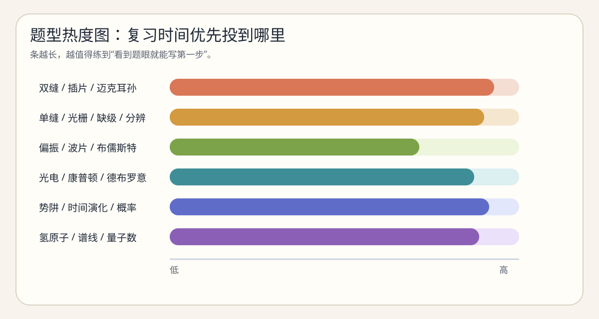
这张图把复习优先级可视化，适合你每天开始复习前先扫一眼，决定今天先啃哪块。
| 模块 | 高频度 | 常见题型 | 题眼关键词 | 这一块最该练什么 |
|---|---|---|---|---|
| 双缝干涉 | 极高 | 填空、计算、大题第一问 | 第 k 级、亮纹、暗纹、条纹间距、插片、中央明纹 | 先写 \(\delta \approx dx/D\) 再联立条件 |
| 薄膜 / 牛顿环 / 迈克耳孙 | 高 | 计算、判断、易错题 | 相位反转、半波损失、移动镜面、条纹数 | 判断相位反转与 \(2\Delta d\) |
| 单缝衍射 | 高 | 填空、计算 | 暗纹、中央明纹宽度、第一暗纹 | 区分半宽和整宽，守住 \(2f\lambda/a\) |
| 光栅与缺级 | 极高 | 计算、大题中段 | 主极大、缺级、最高级次、分辨本领 | 联立两个条件，不要只写一个式子 |
| 偏振 | 中高 | 选择、填空、简答、计算 | 自然光、马吕斯、多片偏振片、布儒斯特角、波片 | 逐片乘 \(\cos^2\theta\)，别忘第一片先减半 |
| 黑体辐射 | 中 | 比值题、概念题 | 峰值波长、温度比、辐射本领 | 区分维恩位移定律与四次方关系 |
| 光电效应 | 极高 | 填空、计算、综合题 | 截止电压、逸出功、阈频、红限 | 牢固到能一眼写出 \(h\nu=W+eU_s\) |
| 康普顿散射 | 中高 | 计算、比值题 | 散射角、波长改变量、比较大小 | 抓住 \(1-\cos\phi\) |
| 德布罗意 / 不确定关系 | 中高 | 填空、简答、计算 | 加速电压、缝宽、量级估算 | 先写动量，再转波长或不确定量级 |
| 无限深势阱 | 极高 | 大题、证明型、过程型 | 本征态、初态展开、时间演化、概率、平均能量 | 把 \(c_n, |c_n|^2, \Psi, |\Psi|^2\) 分清 |
| 氢原子与量子数 | 极高 | 填空、选择、计算、简答 | 谱线数、最短波长、\(m_l\)、\(L\)、\(L_z\) | 会背能级、会夹量子数、会判断巴耳末系 |
如果你觉得大题会做，但小题不稳，那通常不是知识不够，而是没把“必须一眼写出的短答案”单独练出来。
填空专项 1 参考答案：
\(\lambda D/d\)， \(dx/D\)， \(\delta=k\lambda\)， \(\delta=(k+1/2)\lambda\)， \((n-1)t\)， \(2\Delta d\)， \(a\sin\theta=m\lambda\)， \(2f\lambda/a\)， \(d\sin\theta=k\lambda\)， \(R=\lambda/\Delta\lambda=kN\)， \(k=md/a\)， \(I_0/2\)， \(I=I_{\text{in}}\cos^2\theta\)， \(\tan i_B=n_2/n_1\)， \(\Delta nt=\lambda/4\)， \(\Delta nt=\lambda/2\)， 圆偏振， 圆偏振。
填空专项 2 参考答案：
\(\lambda_mT=b\)， \(M=\sigma T^4\)， \(h\nu=W+eU_s\)， 最大初动能， \(\Delta\lambda=\lambda_C(1-\cos\phi)\)， \(\lambda=h/p\)， \(\Delta x\Delta p_x\ge\hbar/2\)， \(0<x<a\)， \(\psi_n(x)=\sqrt{2/a}\sin(n\pi x/a)\)， \(E_n=n^2h^2/(8ma^2)\)， \(e^{-iE_nt/\hbar}\)， \(|c_n|^2\)， \(|\Psi|^2\)， \(E_n=-13.6/n^2\) eV， \(n(n-1)/2\)， \(0,1,\dots,n-1\)， \(-l,\dots,l\)， \(L=\sqrt{l(l+1)}\,\hbar\)。
判断专项参考结论： 错、错、错、错、错、错、对、错、错、对、错、错。
这部分相当于给每个主章节再追加一轮练习型讲解。不是为了新知识，而是为了让你在写题时更自然地下笔。
题型辨识： 这道题还是双缝，只不过不是单独问某条纹位置，而是问两条不同类型条纹之间的距离。
学习点： 同类条纹间距是 \(\lambda D/d\)，亮暗相邻之间则只有一半。
空间相干性问题经常写成“条纹刚好消失时，光源宽度是多少”。这一类题背后在问：扩展光源不同点发出的干涉图样彼此错开到什么程度时，总图样被洗平。
这类题闭卷里一般不要求你完整推导，但你要知道它描述的是“条纹被源宽平均掉”的临界条件。
典型坑： 只会解出 \(\sin\theta = k\lambda/d\)，却忘了还必须满足 \(|\sin\theta|\le 1\)。
最后还要取不超过这个上界的最大整数。
如果只有两片互相垂直的偏振片，第二片会把第一片透过的偏振方向完全挡掉，所以无光。中间插入第三片后，偏振方向被分两次旋转，反而能透过一部分。
这类题的物理意义很强，值得你自己口头解释一遍。
如果峰值波长变为原来的 \(1/3\)，那温度就变成原来的 3 倍；于是总辐射本领变成原来的 \(3^4=81\) 倍。
这题很适合作为你自己检查是否区分“峰值位置”和“总本领”的快练题。
核心提醒： 别一边用频率、一边用波长，一定先统一。
如果题目问两个散射角下的改变量比值，你应该第一眼先写：
这意味着所有常数都可以先放一边，先比较角度函数。比如 \(\phi=0^\circ\) 时改变量为 0，\(\phi=180^\circ\) 时最大。
很多初态看起来复杂，其实只是为了逼你化成若干本征态的线性组合。最常用的两个恒等式是：
看见类似 \(\sin(\pi x/a)(1-\cos(\pi x/a))\) 的形式时，要立刻想到能拆成前两项本征态。
如果题目已经给出展开系数，平均能量最省事的算法一定是：
因为能量测量结果只有那些本征值，而系数模方就是对应概率。你要培养一个习惯：能不积分就不积分，先看题里给你的结构够不够直接加权。
是同一类题。因为 \(E=h\nu=hc/\lambda\)，能量差越大，频率越大、波长越短。所以如果题目让你找最短波长，本质是在找最大跃迁能量差。
若又限制在可见光范围，通常就先看巴耳末系，再在这个系列里找能量差最大的那一条。
若只知道 \(n=4,m_l=1\)，那么由 \(|m_l|\le l\le n-1\) 得 \(1\le l\le 3\)，此时 \(l\) 可能是 1、2、3，不唯一。
只有当范围被夹成一个点，比如 \(m_l=-3\) 时，才会唯一确定 \(l=3\)。
很多期末大题表面很长，其实是几段不同题型拼起来。例如一道题先给双缝，再加插片，再问某级亮纹位置，本质上是：
你在练综合题时，最该练的不是一口气写完，而是先把题型切成 2–3 段。
如果你已经刷过模拟卷 A，这一套更适合拿来检验你到底是“会公式”还是“会做题”。题型覆盖更分散，也更接近期末里那种前面小题密、后面大题综合的感觉。
| 题号 | 最关键评分点 | 最典型失误 |
|---|---|---|
| 1 | 把“第 4 级亮纹位置”换成 4 个间距 | 直接把位置当间距 |
| 2 | 会判断半波损失导致亮暗条件交换 | 机械写 \(2nt=k\lambda\) |
| 3 | 写出 \(2\Delta d=N\lambda\) | 漏掉 2 |
| 4 | 用中央明纹整宽公式 | 少一个 2 |
| 5 | 分辨本领先算总值，再求 \(\Delta\lambda\) | 把级次忘掉 |
| 6 | 自然光先减半 | 直接写 \(\cos^2 45^\circ\) |
| 7 | 两个定律分开用 | 把峰值比和四次方混成一式 |
| 8 | 知道 \(h\nu\) 已给成 \(2W\) | 仍然先去换波长频率 |
| 9 | 抓住 \(1-\cos\phi\) | 常数算一大堆 |
| 10 | 德布罗意波长公式完整 | 根号漏 \(2meU\) |
| 11 | 概率是模方，平均能量是加权和 | 把负号带进概率 |
| 12 | 用范围直接夹出 \(l\) | 把 \(L\) 和 \(L_z\) 混掉 |